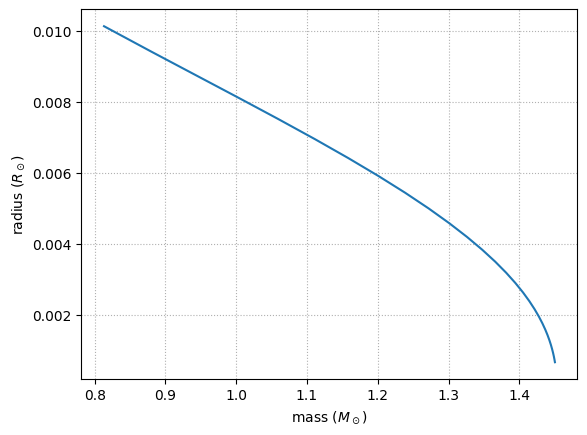

White dwarf star structure#
We’ll investigate white dwarg structure by consider integrating the equation of hydrostatic equilibrium:
together with continuity:
and we’ll use the zero-T degenerate equation of state.
import numpy as np
import matplotlib.pyplot as plt
First we’ll write our RHS function. We’ll integrate
All of our units will be in CGS.
Some physical constants (CGS)
G = 6.67e-8
c = 3.e10
h = 6.63e-27
m_u = 1.66e-24
m_e = 9.11e-28
M_sun = 2.e33
Here’s the righthand side function:
def rhs_newton(r, y, rho_func, P_c):
m, P = y
rho = rho_func(P)
dmdr = 4.0 * np.pi * r**2 * rho
if r == 0.0:
dPdr = 0.0
else:
dPdr = -G * m / r**2 * rho
return np.array([dmdr, dPdr])
Degenerate electrons#
For zero-T neutron degeneracy, the number density of electrons is
where \(x_F = p_F / (m_e c)\).
We’ll write this as
and the pressure is
with we’ll write as:
with
Now, we have our EOS as \(P(\rho)\), but we need to invert it, \(\rho(P)\). For this we’ll use a root finding algorithm.
from scipy.optimize import brentq
def pres_deg(rho, Y_e=0.5):
# compute the dimensionless Fermi momentum x = p / mc
# from rho
B = 8 * np.pi * m_u / 3.0 * (m_e * c / h)**3 / Y_e
x = np.cbrt(rho / B)
# compute the dimensionless pressure
f = x * (2 * x**2 - 3) * np.sqrt(1 + x**2) + 3 * np.arcsinh(x)
# compute the pressure scaling
A = (np.pi / 3) * (m_e * c / h)**3 * m_e * c**2
return A * f
def rho_deg(pres, Y_e=0.5):
# we shouldn't encounter this
if pres < 0:
return 0;
A = (np.pi / 3) * (m_e * c / h)**3 * m_e * c**2
f = pres / A
# find the x that gives us this f
x = brentq(lambda x: f - (x * (2 * x**2 - 3) *
np.sqrt(1 + x**2) + 3 * np.arcsinh(x)),
0, 1000)
B = 8 * np.pi * m_u / 3.0 * (m_e * c / h)**3 / Y_e
return B * x**3
Now we can integrate this. We’ll be integrating from the center outward. We want to stop when \(P \sim 0\).
from scipy.integrate import solve_ivp
we’ll use an event to stop the integration
def surface(t, y, rho_func, P_c):
# return the pressure -- when it is ~zero we will terminate
# we'll use the central pressure, P_c as the scale
smallp = P_c / 1.e10
return y[1] - smallp
surface.terminal = True
surface.direction = -1
we’ll pick a large ending radius, since we’ll terminate before we end
R_sun = 7.e10
r_end = R_sun
We need initial conditions. We’ll supply the central density and get the pressure from that. The initial mass (\(m(r=0)\)) is 0.
rho_c = 2.e9
P_c = pres_deg(rho_c)
P_c
np.float64(1.2338331610469019e+27)
Now we can integrate. We’ll do a grid, running through different central densities.
central_densities = np.logspace(7, 11.5, 30)
mass = []
radius = []
for rho_c in central_densities:
P_c = pres_deg(rho_c)
sol = solve_ivp(rhs_newton, (0, r_end), np.array([0.0, P_c]),
rtol=1.e-5, atol=1.e-10,
args=(rho_deg, P_c), events=surface)
assert sol.success
mass.append(sol.y[0, -1])
radius.append(sol.t[-1])
Now we can plot the mass-radius relation
fig, ax = plt.subplots()
ax.plot(np.array(mass) / M_sun, np.array(radius) / R_sun)
ax.grid(ls=":")
ax.set_xlabel(r"mass ($M_\odot$)")
ax.set_ylabel(r"radius ($R_\odot$)")
Text(0, 0.5, 'radius ($R_\\odot$)')

We see that:
More massive white dwarfs have smaller radii
As we approach \(1.4 M_\odot\), the radius is going to zero—this is the Chandrasekhar mass.